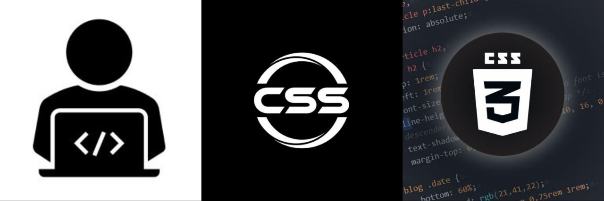

CSS لُغة التنسيق ولمسات الجمال
اسم الطالبة؟ ملك تامر إسماعيل السعيد
الرقم الجامعي؟ 2502819
الجامعة والمستوى؟ أكاديمية الدلتا للعلوم والتكنولوجيا، المستوى الثاني
IS القسم والتخصص؟ نظم ومعلومات
المقرر؟ تطبيقات الإنترنت والمنصات الإلكترونية

المقدمة
..CSS عندما نتحدث عن الفن والديكور، حتمًا لا بُدّ أن نتحدث عن لُغة إن أكثر ما يثير انتباهنا في صفحات الويب، ربما لا يكون بناء العناصر نفسها، وإنما طريقة تنسيقها وتصميمها وإضافة لمسة مميزة إليها
وكما في اقتنائك للكتب والروايات يعد غلاف الكتاب أو الرواية هويته البصرية والواجهة التي تعبر عن محتواه إن أثار تشويقك ونال إعجابك من حيث التنسيق والألوان والخطوط وغيرهم حينها تُقدم على اقتنائه وتصفّحه ، وإن لم يكن ربما لن تقتنيه، ويُقصد هُنا أثر التنسيق والألوان والخطوط في جذب الانتباه، لا الحكم على المحتوى أو قيمته
في تغيير ألوان وخطوط وتصميم صفحات الويب (CSS) لذا، سنتحدث في هذا التقرير البحثي المبسط عن دور لُغة التنسيق لتبدو جذابة للمستخدم
لذلك عندما تأخذ القرار للبدء في تعلم البرمجة فإن أول ما تبدأ به غالبًا هو تعلم تطوير واجهات المستخدم تعتبر تقنية أساسية لإنشاء مواقع الويب، [ الواجهات الأمامية للموقع على وجه الخصوص] (CSS) لأن
عرض الموضوع
؟CSS ما هي لُغة
- "وتعني بالعربية " أوراق الأنماط المتتالية أو الانسيابية " Cascading StyleSheets" اختصار لـ CSS
- هي لُغة تنسيق تُستخدم لتحديد طريقة عرض العناصر غلى صفحة الويب وشكل ظهورها في المُتصفح؛ مثل الألوان والأبعاد والحدود والمواضع والمسافات، وغيرها من الخصائص المرتبطة بالمظهر
- بصورتها الأولى عام 1996، بهدف إتاحة طريقة مستقلة لتحديد المظهر والعرض CSS ظهرت
- بوصف شكل هذه العناصر ومظهرها CSS بوصف بنية عناصر صفحة الويب ومحتواها، بينما تهتم HTML تهتم
- واحد وربطه بعدة صفحات ويب CSS يمكن كتابة وقواعد التنسيق في ملف
؟CSS أهمية لُغة
: في عدة جوانب ومن أبرزها CSS تكمن أهمية لُغة
- تنسيق عناصر الصفحة والتحكم في طريقة عرضها
- المُساعدة في بناء واجهة موقع متكاملة ومنظمة
- ذات المحتوى الأساسي إلى صفحة ذات تصميم واضح وجذاب HTML تحويل صفحة
- تنسيق الموقع بصورة احترافية مع الحفاظ على تناسق الألوان والخطوط والمسافات
- ضمن نماذج الأعمال (CV) إنشاء مشروع عملي يمكن إضافته إلى السيرة الذاتية
؟CSS خصائص لُغة
- بل هي لُغة أوراق أنماط HTML لتحديد المظهر لكنها ليست لُغة ترميز مثل CSS تُستخدم
- تتحكم في الشكل النهائي للعناصر من حيث اللون والحجم والموقع والخط والخلفية والحدود والمسافات
- تساعد على فصل المحتوى عن التصميم مما يجعل تنظيم الصفحات وتحديث مظهرها أسهل
في تغيير ألوان وخطوط وتصميم صفحات الويب؟ CSS دور
من التقنيات الأساسيات المستخدمة في تنسيق صفحات الويب CSS تعد
إذ تتيح للمطورين تغيير ألوان النصوص والخلفيات واختيار الخطوط وضبط أحجامها
بالإضافة إلى تنظيم عناصر الصفحة وتصميمها وتساعد هذه الإمكانيات على جعل المحتوى أوضح في القراءة والاستخدام
أولا: تغيير الألوان
- color تحديد لون النص باستخدام الخاصية CSS تتيح
- background-color تحديد لون الخلفية باستخدام خاصية
- يمكن تطبيق هذه الخصائص على عناصر متعددة داخل الصفحة مثل العناوين والفقرات والأزرار
مثال مبسط
ثانيا تغيير الخطوط
- font-family تحديد نوع الخط باستخدام الخاصية CSS تتيح
- font-size التحكم في حجم الخط باستخدام
- font-weight تحديد سُمكه باستخدام
- تستخدم هذه الخصائص على تنظيم المحتوى وإبراز العناوين وجعل النص أكثر وضوحا راحة أثناء القراءة
مثال مُبسط
ثالثا: تصميم صفحات الويب
- على تغيير الألوان والخطوط فقط بل تساعد أيضا على تنظيم عناصر الصفحة CSS لا يقتصر دور
- إلى تصميم متكامل وسهل الاستخدام HTML تحويل محتوى
- إذ تتيح التحكم في شكل العناصر ومواضعها وأبعادها والمسافات بينها
- كما يمكن إضافة حدود حول العناصر وتحديد خلفياتها وتقسيم المحتوى إلى أقسام واضحة مما يجعلها أكثر جاذبية
مثال مُبسط
| الخاتمة |
| تحتل مكانة مهمة في عالم تطوير الويب CSS في نهاية هذا التقرير يتضح أن لغة |
إذ تساعد المطورين على تحويل الأفكار إلى صفحات ويب جذابة ومنظمة |
كما تسهم في تحسين تجربة المستخدم من خلال عرض المحتوى بطريقة واضحة ومريحة |
من الأساسيات التي ينبغي لكل مهتم بتطوير الويب تعلمها وفهمها CSS ومع استمرار تطور التقنيات الرقمية تظل |
قسم المراجع والمصادر
- 1_W3C. CSS: Cascading Style Sheets. https://www.w3.org/Style/CSS/Overview.en.html
- 2_MDN Web Docs. CSS styling basics. https://developer.mozilla.org/en-US/docs/Learn_web_development/Core/Styling_basics
- 3_MDN Web Docs. CSS: Cascading Style Sheets. https://developer.mozilla.org/en-US/docs/Web/CSS
- 4_MDN Web Docs. Fundamental text and font styling. https://developer.mozilla.org/en-US/docs/Learn_web_development/Core/Text_styling/Fundamentals
- 5_MDN Web Docs. font-family. https://developer.mozilla.org/en-US/docs/Web/CSS/Reference/Properties/font-family
- 6_W3C Web Accessibility Initiative. Designing for Web Accessibility. https://www.w3.org/WAI/tips/designing/
- 7_W3C Web Accessibility Initiative. Colors with Good Contrast. https://www.w3.org/WAI/perspective-videos/contrast/
- 8_https://wiki.hsoub.com/CSS/color
- 9_https://wiki.hsoub.com/CSS/background-color
- 10_https://youtu.be/qc1Z4MN_ttk?si=tP4PXuUB9tOHcXNj
- 11_كِتاب تعلم لُغتي HTML و CSS.
Useful links